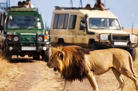
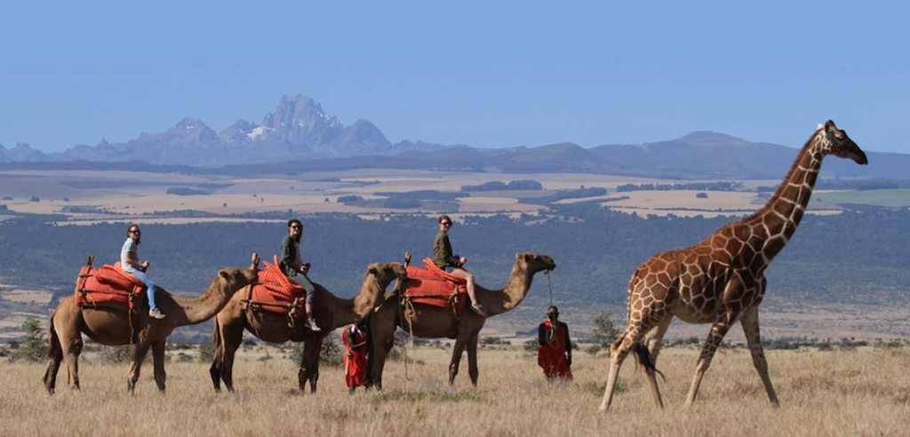
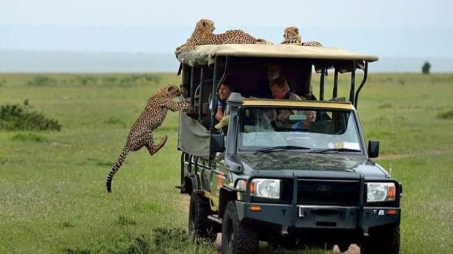

Maasai Mara
Masai Mara National Reserve is one of the most popular tourism destinations in Kenya- Africa. The reserve is located in the Great Rift Valley in primarily open grassland. Wildlife tends to be most concentrated on the reserve’s western escarpment. The Masai Mara is regarded as the jewel of Kenya’s wildlife viewing areas. The annual wildebeest’s migration alone involves over 1.5 million animals arriving in July and departing in November. There have been some 95 species of mammals, amphibians and reptiles and over 400 birds species recorded on the reserve.
Lewa Wildlife Conservancy
Lewa serves as a safe refuge for the critically endangered black rhino and the endangered Grevy’s zebra, as well as the elephant, lion, giraffe, wild dog and other iconic wildlife species in Kenya. The Conservancy is also home to more than 400 species of birds.
Ole pajeta Wildlife Conservancy

This is actually the only place in Kenya to see chimpanzees and you can have a chance to adopt one of them! On a game drive, you can visit the largest black rhino sanctuary and learn about the conservation efforts that are conducted to protect these endangered species. After the single largest translocation process, with the Kenya Wildlife Services and neighboring Lewa Conservancy, the O.P.C is home to 88 black rhinos. You could also make a donation to help more conservation activities for these endangered species.
Amboseli National park
Large concentrations of wildlife occur here in the dry season, making Amboseli a popular tourist destination. It is surrounded by six communally owned group ranches. The National Park embodies five main wildlife habitats (open plains, acacia woodland, rocky thorn bush country, swamps and marshland) and covers part of a Pleistocene lake basin, now dry.